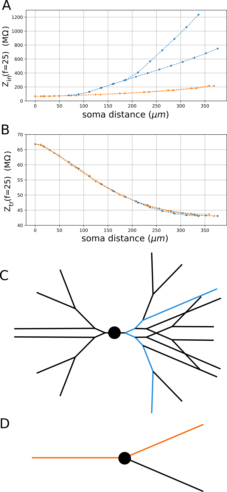
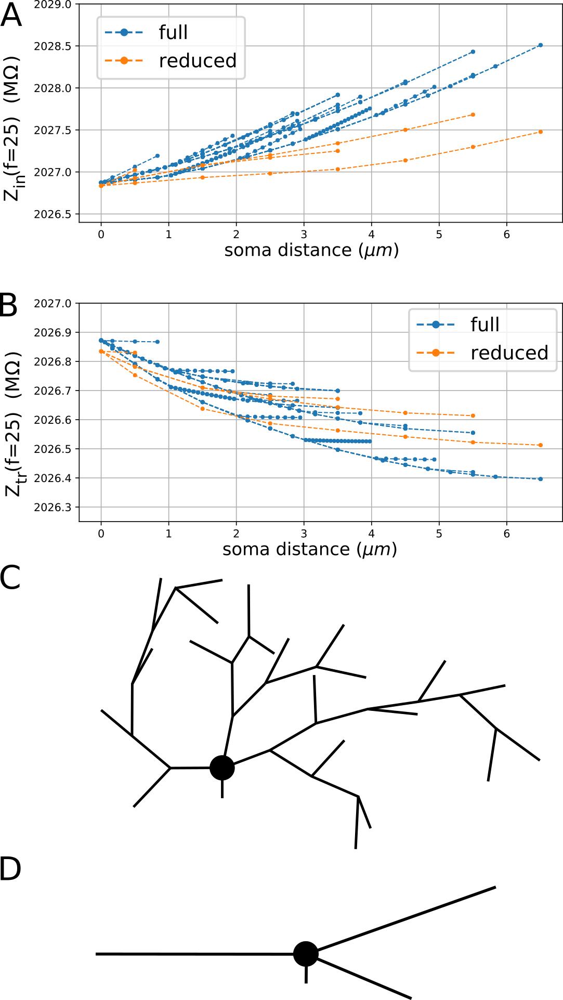
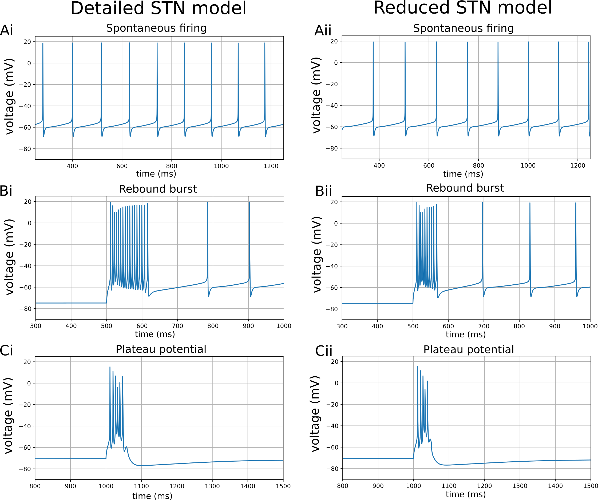
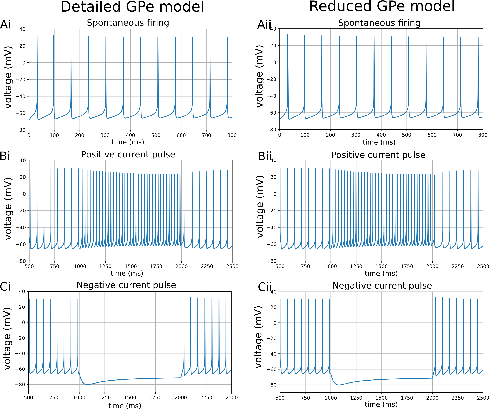
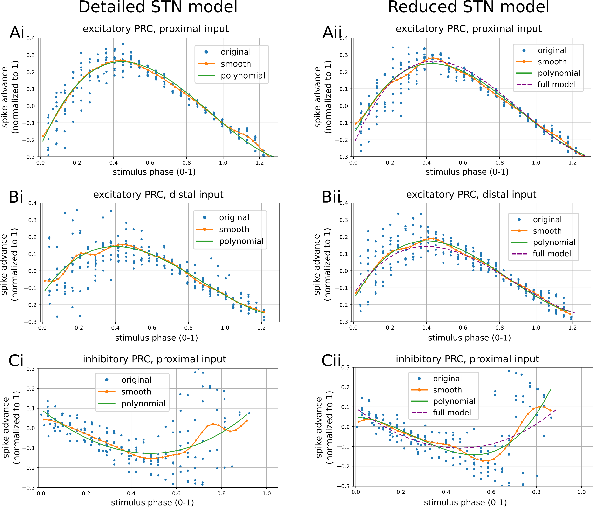
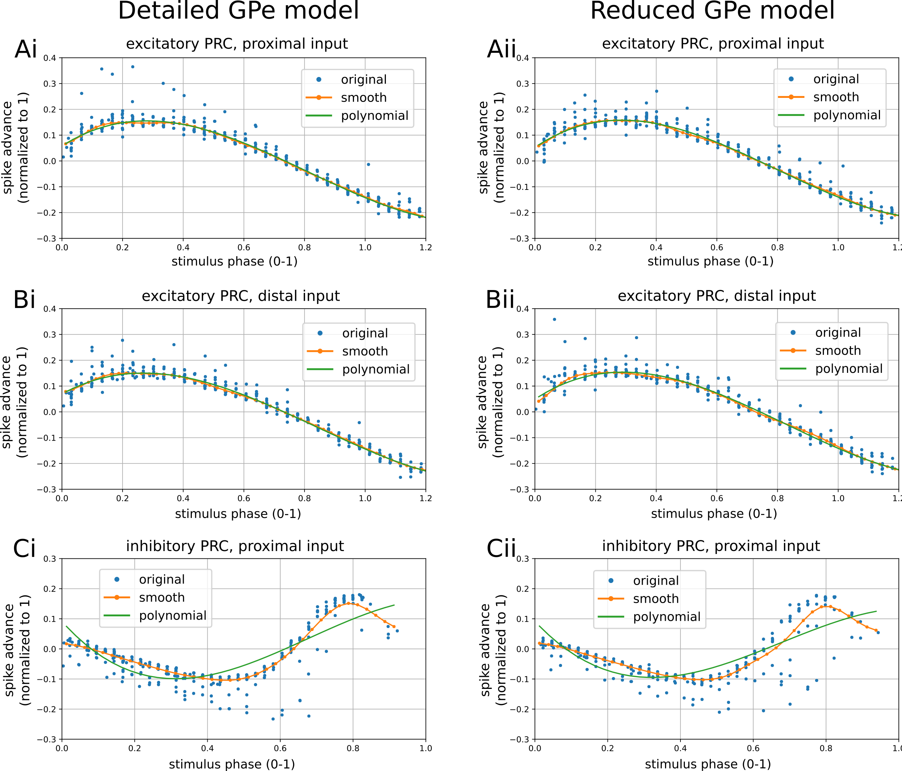
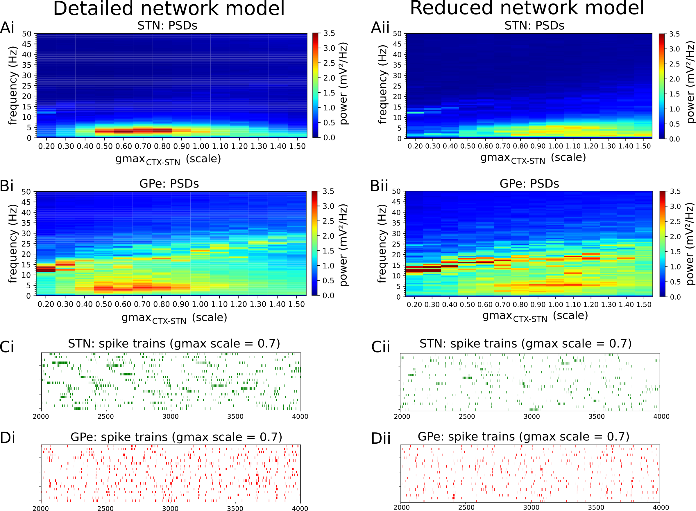
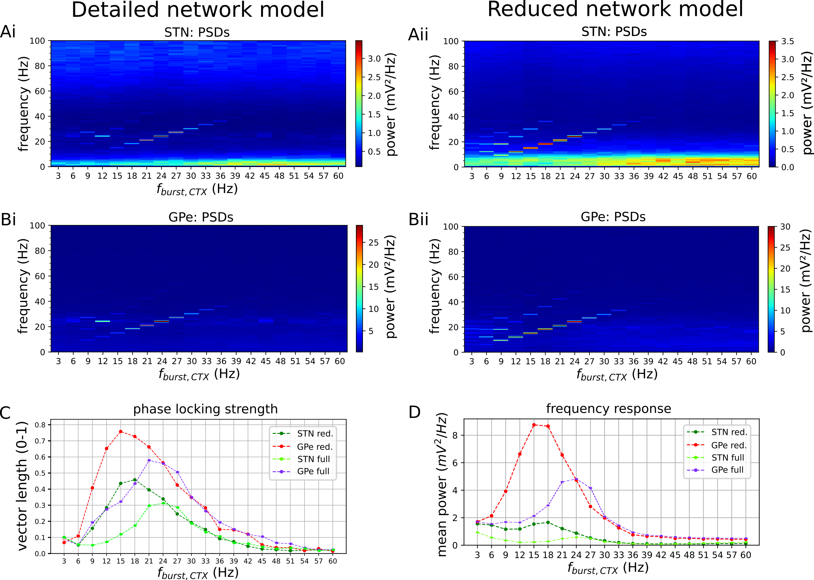
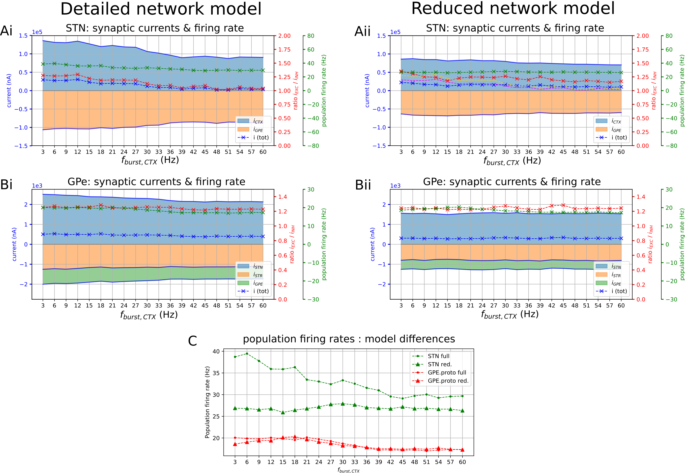
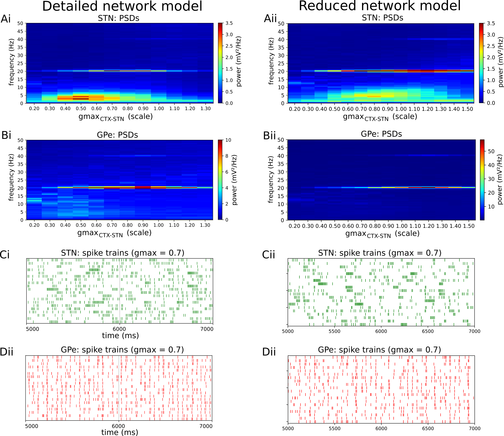

Beta-band oscillatory activity and exaggerated bursting in the STN-GPe network are key features of parkinsonian pathophysiology that are correlated with its akinetic-bradykinetic motor symptoms [325, 224, 189, 314, 323]. Moreover, improvements in those symptoms correlate with their suppression by DBS. Hence, capturing these features is essential for computational models whose purpose it is to optimize DBS stimulation protocols. The biophysically detailed network model of the STN-GPe loop presented in Chapter 3 exhibited spontaneous beta-band synchronization and resonance behavior in Parkinsonian conditions, and synchronization in the network occurred together with strong burst firing in STN neurons. However, because of the biophysical detail captured by the model, it consists of a large number of state variables and high computational complexity. This leads to long simulation times that make the model impractical for the efficient exploration of DBS parameter settings, where simulation of large numbers of neurons at very small timescales is required. Moreover computational complexity limits the ability to scale up the size of the network to realistic numbers of neurons, equaling approximately 13,000 cells in the rat subthalamic nucleus (STN) and 30,000 in the external globus pallidus (GPe), unilaterally [269, 5].
At the same time, the high level of biophysical detail captured by the model confers it with several key advantages. First, the neuron models used can reproduce spiking features that are mediated by the interaction between dendritic ion channels and synaptic currents. Indeed, bursting in STN neurons is a phenomenon mediated by the generation of voltage plateaus originating from influx in distal dendrites [120]. In addition to network topology and synaptic strengths, dendritic processing of synaptic inputs also influences the synchronization properties of neurons, both by passive propagation and by the engagement of active ion channels [319, 123]. Another major advantage of detailed multi-compartment models is that the effects of extracellular electrical stimulation can be modeled using spatially varying extracellular potentials. This captures its distributed interaction with the membrane rather than assuming a single equivalent source modifying the neuron’s output, often located at the soma.
To preserve the advantages of the biophysically detailed model it is desirable to have an intermediate level of description that retains its straightforward relation to the underlying biophysiology of the system while reducing the computational complexity of the model to achieve computational efficiency. One way to address this problem, is the use of methods for the systematic reduction of detailed morphological neuron models into equivalent cable models. Such methods were explored early in the development of neuronal cable models, starting with the ‘3/2 rule’ for collapsing passive branching structures into analytically equivalent cylinders [295, 296]. This rule states that neurites originating at a branch point can be replaced by an equivalent cylinder that preserves passive outward voltage attenuation if the branch point obeys the 3/2 power rule. In short, the sum of the 3/2 power of child branch diameters must equal the 3/2 power of the parent branch diameter, biophysical properties must be uniform, and the child branches must terminate at the same electrotonic distance from the branch point. These limitations were relaxed in subsequent reduction methods, producing equivalent cables for passive dendrites with arbitrary geometries, in terms of outward voltage attenuation [65, 339, 89, 267, 106, 98]. However, because local input impedances are altered by those methods, voltage transients in response to dendritic current sources are not preserved. This means that the local effects and inward propagation of transients evoked by active ion channels or synaptic currents are not preserved. To address the case of nonlinear ionic and synaptic conductances in the dendrites, heuristic methods were developed that preserve certain key electrical properties but these often require additional fitting or manual fine tuning steps [356, 46, 284, 74, 228].
Despite their ability to substantially reduce the computational complexity of branching neuron models, morphology reduction methods are limited in their ability to accurately preserve the full spectrum of responses of detailed models [150, 93]. Most importantly, all morphology reduction methods suffer from the input impedance problem [78] where the local input impedance seen at points on the dendrites is different from that in the original model. As a result, dendritic current sources such as synapses will generally not produce identical voltage transients and, therefore, their coupling to voltage-sensitive ionic conductances is altered. Moreover, after collapsing dendritic branches, synapses that were originally spatially and electrically isolated are mapped to the same location, reducing voltage compartmentalization and introducing mutual shunting effects. As a result of these limitations, neuronal responses that depend strongly on dendritic input impedance and activation of dendritic active channels are generally not accurately reproduced when the reduction eliminates a high degree of branching [150, 93]. Nevertheless, intermediate levels of reduction that preserve a certain degree of branching can be used to reproduce key features of the neuron’s responses [150, 93]. If these features are sufficient to preserve key properties of neuronal network behavior, morphology reduction would be a suitable strategy to study the network effects of physiological and electrical interventions such as deep brain stimulation (DBS). The capabilities of reduced morphology models to reproduce single cell responses of their more detailed counterparts were investigated systematically in [150] for GPe neurons and in [93] for motor neurons. However, their ability to reproduce neuronal network activity and network synchronization properties has not yet been investigated.
From the perspective of network synchronization, one way to quantify how well the features of a neuron’s response properties are captured by an equivalent model are phase response curves (PRC). In general, PRC quantify the phase perturbation of an oscillating system in response to an input arriving at a specific phase of its ongoing oscillation. In neurons, therefore, PRC give the phase advance or delay of the following spike as a function of the phase at which an input arrives during the inter-spike interval (ISI). An important theoretical result is that the shape of the PRC predicts the tendency of neurons to synchronize to oscillatory inputs, and can also predict synchronization patterns arising in mutually connected populations of oscillating neurons, depending on their connection types [143, 96, 123, 7, 38, 6]. Moreover the shape of the PRC is determined by both passive filtering properties of dendrites and nonlinearities introduced by active conductances [123, 137, 69], which are present in GPe and STN neuron dendrites. It may, therefore, be expected that PRC provide a suitable way to compare the characteristics of candidate model neurons when the aim is to investigate network synchronization properties.
Therefore the aim of this study was to reduce the biophysically detailed network model of the STN-GPe loop presented in Chapter 3 to a more tractable number of compartments while maintaining key features of network activity and its frequency response. To achieve this, a morphology reduction algorithm was applied that reduced the detailed multi-compartmental neuron models to equivalent cable models consisting of fewer compartments. To gauge whether the essential input-output characteristics of the model neurons were captured before simulating the complete network, two methods were used. First, responses of model neurons to current clamp protocols designed to elicit stereotypical responses were compared to ascertain that crucial features such as bursting and spontaneous oscillations were conserved. Second, phase response curves of the model neurons were compared to measure how model neurons synchronized to their synaptic inputs. Finally, the behaviour of the reduced network model was compared with that of the full model presented in Chapter 3 to investigate whether synchronization properties, neuronal activity patterns, and the network response to cortical oscillatory inputs were preserved.
An algorithm for reducing the number of compartments of conductance-based neuronal cable models by constructing equivalent cables was developed. The algorithm for clustering compartments and calculating properties of the equivalent cables was adapted from the algorithms described in [46, 228, 89]. Dendritic regions were first defined in the STN and GPe neuron models based on their distance from the soma [89]. Starting at the trunk section of each primary dendrite attached to the soma, compartments located at distance from the soma, where were assigned to cluster . The spacing was set to 50 micron in STN neurons and 1 micron in GPe neurons. In GPe neurons, the spacing was much smaller because dimensions of the original [133] GPe neuron model were normalized to 1 micron resulting in very short lengths of dendritic branches (see discussion).
Next, each cluster of compartments was represented by an equivalent cable, with dimensions and biophysical properties determined using the equations described in [228]. The equations are based on those of [46] and are designed to yield equivalent cables with axial resistance per unit length equaling that of the collapses branches connected in parallel. In each cluster, sequentially connected compartments were first combined yielding cables with equivalent length and diameter :
where is the length of sequential compartment i, is the axial resistivity in cm (typically assumed constant in a neuron, as in the models used here), and is the absolute axial resistance in defined as . This ensures that the axial resistance is conserved in the equivalent cable. Then, the resulting parallel cables in the cluster were combined using equivalent length and diameter
resulting in an equivalent axial resistance equal to a parallel circuit of merged axial resistances. Finally, all membrane conductances and capacitances in the original cable were scaled by the ratio of original to equivalent surface area of cluster :
where is the surface area of compartment belonging to cluster , is the surface of the equivalent cable for cluster , and and are the equivalent membrane conductances and capacitance in cluster .
Using these parameter choices for the reduction algorithm, the number of compartments in the STN cell model was reduced from 189 to 30. In the GPe cell model the number of compartments was reduced from 141 to 19. As a result, the total number of compartments in the STN-GPe network model was reduced from 23550 to 3400 representing a reduction by 85.5%.
The structure and connectivity of the STN-GPe network model was as described in Chapter 3, except for the neuron models used to represent STN and GPe cells. For the cell models, the reduced STN and GPe cell models were substituted for the original, detailed morphology models. Synapse locations were determined randomly according to the same spatial distributions as in the original network model. While all spike trains emitted by noisy spike generators were identical, the membrane noise current in each neuron was not necessarily the same as random number generators were initialized differently in each simulation. The cell populations and their connectivity patterns were unchanged: the network consisted of four populations of neurons (Fig. 3.1): the STN and GPe neurons and their cortical (CTX) and striatal (MSN) inputs, modeled as spike generators. The STN and GPe populations consisted of 50 and 100 cells, respectively, with 10% of cells in each of those populations modeled as Poisson spike generators as an additional source of random noise in the network. The cortical and striatal populations consisted of 1,000 and 2,000 cells, respectively, modeled as spike generators.
Connection patterns between the populations were determined stochastically by randomly selecting a fixed number of afferents from the pre-synaptic population for each post-synaptic cell. The same connectivity patterns were used as in the detailed network model.
The network and cell models were simulated in the NEURON simulation environment [153] and implemented in Python. The default fixed time step integrator with a time step of 0.025 ms was used for all simulations. Network simulations were run on the UCD Sonic cluster using 12 parallel processes per simulation on a single computing node consisting of two Intel Intel Xeon Gold 6152 CPUs (22 cores per CPU) and 384 GB memory. The reduced network model was simulated for 7 seconds in 110 seconds CPU time, which represents a reduction of 79% over the detailed model which took 521 seconds of total CPU time to simulate.
Input and transfer impedances were calculated using the NEURON impedance tools that use the analytical solutions for linear cable models described in [51, 184]. For the calculation of input and transfer impedances, all nonlinear ionic conductances were set to their steady state values for a transmembrane potential of -65 mV.
The phase response curve describes the phase advance (positive) or delay (negative) of an oscillating system in response to an input as a function of the phase at which it arrives [137]. In neurons, therefore, it describes the advance or delay of the next spike time as a function of the stimulus time in the inter-spike interval (ISI). PRCs were measured using synaptic inputs in STN and GPe neuron models during positive current injection, while cells were firing at 20 Hz. In the STN neuron models, glutamergic synaptic inputs were located distally and proximally to the soma conforming to experimentally reported synapse distributions [34, 231, 273]. In the GPe models, a glutamergic synapse was placed distally to the soma [334]. In both models, an inhibitory GABAergic synapse was placed in the perisomatic region, proximal to the soma [335, 55, 313]. Synaptic inputs were modeled as bi-exponential synapses with reversal potentials of 0 mV and -80 mV to model glutamergic and GABAergic synapses respectively. Rise and decay time constants were 1 ms and 3 ms for glutamergic synapses, and 1 ms and 12 ms for GABAergic synapses, respectively. A single synaptic stimulus was administered in each ISI, its phase was recorded, and the phase advance or delay of the following spike was recorded. This resulted in a sample where:
with equal to the arrival time of the spike at the stimulated synapse, the last spike time of the neuron, the inter-spike interval measured between and the next spike time after the synaptic stimulus, and the mean inter-spike-interval over the stimulation/measurement period.
Sampling the PRC during positive current injection rather than during spontaneous firing enabled a more rapid sampling of the PRC than if cells were allowed to spike at their lower resting rates, and brought the excitation level and firing rate closer to the situation in the network. The ISI was sampled with a sampling interval of 2 ms, and 10 measurements for each time point in the ISI were obtained during a single simulation run. This resulted in a total simulation time of approximately 12500 ms (50 ms / 2 ms 10 repetitions 50 ms) per PRC. The stimulus times in successive ISIs were randomized to obtain 10 measurements per time point within the ISI while introducing variability in the neuron’s state variables. The reference ISI used to calculate stimulus phases was equal to the mean ISI during measurement of a PRC.
The model reduction yielded reduced morphologies consisting of three equivalent cylinders representing the dendrites in both the STN and GPe neuron models (Fig. 5.1, 5.2). The input impedance seen at the soma was maintained using this method, with an accuracy of 0.1 % (Fig. 5.1.A, 5.2.A). However, the local input impedance seen at points along the dendrites deviated from the detailed models with increasing distance from the soma because of the higher neurite diameter and membrane conductances introduced by the equivalent cable method. Transfer impedances between different areas of the cell and the soma, characterizing the impact of local current sources on the somatic membrane voltage, were well maintained in the reduced models (Fig. 5.1.B, 5.2.B).


Comparing the responses of detailed and reduced STN and GPe models to current clamp protocols designed to elicit stereotypical responses show that these are well captured by the reduced cell models (Fig. 5.3 - 5.4).
STN model neurons fire spontaneously at approximately 9 Hz (Fig. 5.3.Ai - Aii), capturing their behavior in vitro where they fire between 5-15 Hz [120]), mediated by the persistent sodium current (NaP channel). Both STN neuron models show a rebound burst response in response to offset of hyperpolarizing current (Fig. 5.3.Bi, Bii), and a plateau potential in response to a depolarizing input delivered while the cell is hyperpolarized (Fig. 5.3.Ci, Cii).
The automatic reduction method preserved the stereotypical responses well without manual fine tuning of parameters. The spontaneous firing rate was 12.5% lower in the reduced model compared to the original cell model. This could be rectified by increasing the density of the persistent sodium (NaP) current in the reduced cell model by 1.7%. The rebound burst response was preserved, but its length was reduced from 17 to 10 spikes caused by earlier termination of influx in dendritic ion channels. The plateau potential (Fig. 5.3.C) was also preserved in the reduced model but shortened in duration by one spike, as its underlying currents are the same as those for the rebound burst.

GPe neurons in vitro fire spontaneously at 15 Hz with a characteristic action potential shape [133], which was well captured by the detailed and reduced model neurons (Fig. 5.4.Ai, Aii). Other features of GPe projection neurons that were captured with high precision by the original model neuron [133] and the reduced model are rapid firing (36 Hz) with spike height adaptation in response to a positive current pulse (100 pA, Fig. 5.4.Bi, Bii), and a characteristic sag in the membrane voltage in response to hyperpolarizing current (-100 pA), mediated by HCN current (Fig. 5.4.Ci, Cii).

To measure how the detailed and reduced models synchronized to their synaptic inputs, PRC were measured using synaptic inputs located at biologically realistic locations in the cells’ dendritic trees (Ch. 3.2, Fig. 3.1).
In the STN neuron models, excitatory PRC were positive for synaptic inputs arriving in the middle segment of the ISI and had smaller negative regions near the start and end of the ISI (Fig. 5.5.A, B). Although small negative regions at the start of the ISI are commonly permitted in classification of type I PRC, due to stimulation during the downstroke of the action potential, the negative region at the end of the ISI indicates a type II PRC. When the excitatory synapse was placed farther down the dendrite, more distally to the soma, the negative region at the end of the ISI became larger and covered a larger phase interval and the magnitude of the phase shift was reduced. This vertical scaling of the PRC as the synapse is moved to a more distant location in the dendrite reflects increased attenuation of post-synaptic potentials originating at distant sites. Excitatory PRCs were well preserved in the reduced cell model (Fig. 5.5.Aii, Bii), with only small deviation between polynomial fits to the PRC samples. Inhibitory PRC were negative for synaptic inputs arriving in the middle segment of the ISI and had positive regions at the start and end of the ISI (Fig. 5.5.C). Phase shifts elicited by stimuli arriving late in the ISI showed a large variance, reflecting a large residual influence of past stimuli on ion channels governing the membrane voltage. This was the case in both the detailed and reduced cell model, resulting in a larger mismatch between PRC for later phases, while the match in early phases was close (Fig. 5.5.C).

In the GPe neuron model, excitatory dendritic PRCs were clearly biphasic with a large negative region starting at the last 30th percentile of the ISI (Fig. 5.6.A, B). The inhibitory PRC was largely symmetric with the excitatory one, showing a large negative region followed by a smaller positive region in the last 40th - 30th percentile. Both types of PRC were again well matched by the reduced GPe model (Fig. 5.6.Aii, Bii, Cii), indicating that the phase response was preserved between the two models.

In order to assess the effectiveness of the reduced cell models to capture the characteristics of the original neuron models essential to their network behavior, the cell models were substituted in the network model of the STN-GPe loop presented in Chapter 3 and network activity and firing patterns were compared. The frequency response of both networks in the beta-band in particular was investigated. Given the correlation between the improvement in Parkinsonian motor symptoms and the suppression of beta-band oscillatory activity in the STN-GPe network [190, 369, 97, 303], the frequency response in this band should be maintained in the reduced network if the model is to be used to optimize DBS stimulation prototocols.
The first key behavior exhibited by the detailed network model of Chapter 3 was its ability to show weak spontaneous oscillations in the beta-band range with the oscillation frequency depending on degree of excitation by cortical inputs (Fig. 3.2, 3.10). This behavior was retained in the reduced network model, with differences observed in the power of beta-band and low-frequency (2-5 Hz) oscillations (Fig. 5.7).
In the detailed network model, increasing the strength of cortical excitation revealed a parameter region at intermediate synaptic strengths where strong low-frequency bursting (2-5 Hz) in the STN co-occurred with weak synchronization (Fig. 5.7, ). Although this parameter region is present in the reduced network model, the power of low-frequency oscillations is lower (Fig. 5.7, right column). The reduction in low-frequency power was related to the fact that the reduced STN neuron models were less prone to bursting (Fig. 5.7.C): with a synaptic strength corresponding to the maximum low-frequency power () in the detailed model, STN neurons showed a mean burst rate of 0.5 bursts/sec in the reduced model compared to 1.5 bursts/sec in the detailed model.

The second key behavior of the detailed network model was resonance of the STN-GPe feedback loop with cortical beta-band activity arriving via CTX-STN afferents. The resonance behavior was qualitatively retained by the reduced network model (Fig. 5.8) but the resonance peaks in the STN and GPe populations were shifted toward the lower frequency range by approximately 6 Hz (Fig. 5.8.C,D) and increased in magnitude. The phase vector lengths were also increased (Fig. 5.8.C), indicating stronger phase synchronization to the cortical oscillation in STN and GPe spike trains. This occurred despite the close match in phase response curves, indicating that PRC alone are not a good predictor of synchronization strength. For example, between 15-18 Hz there is a large discrepancy in the strength of phase synchronization between the full and reduced models. This discrepancy could be explained, however, by differences in excitability and firing rates between the two models: the decrease in resonance frequency and increase in resonance strength was accompanied by lower firing rates in STN neurons but not in GPe neurons (Fig. 5.9.C). Moreover, the total synaptic currents delivered to STN and GPe neurons were decreased (Fig. 5.9.A-B, shaded areas).
The downward shift in resonance frequency in the reduced model mirrors the results of Chapter 3 where the the frequency of maximal phase locking decreases with the ratio of excitation to inhibition and the strength of phase locking increases (Fig. 3.13.B-C). Although STN neurons in the reduced model have a lower firing rate and the net synaptic current is smaller in the frequency range of resonance, the estimated E/I ratio is not consistently lower (Fig. 5.9.A). This paradoxical observation could be due to inaccurate estimation of the E/I ratio based on recordings in only 6 % of cells or it could be due to the increased effectiveness of inhibition in the electrically compact reduced neuron model.


A third key behavior of the detailed network model was that the strength of beta-band resonance in the STN-GPe feedback loop could be varied by increasing the level of cortical excitation (see Chapter 3, Fig. 3.14). The reduced network model also exhibited this behavior but the point where maximal 20 Hz resonance occurred was at a higher value of CTX-STN synapse strength (Fig. 5.10). The shift of the resonance peak was related to features of the spiking patterns of STN neurons: comparing spike features at a synaptic scale factor of 0.7 (Fig. 5.10.C, D), STN spiking is sparser in the reduced model (17.7 Hz, 23.0 Hz in reduced/detailed model, respectively), the mean intra-burst firing rate is higher (101 Hz vs 87 Hz) and bursts appear shorter without a prominent tail with reduced firing rate (Fig. 5.10.C).

A reduced model of the STN-GPe network that retains key properties of a biophysically detailed model is presented. The model was generated in an automated fashion based on cellular morphology reduction algorithms applied to the multi-compartment cell models that make up the detailed network model. The reduced network model represents a reduction in state variables of 85.5 % and computation time of 79 % over the detailed model. This study demonstrates that reduced models of neuronal networks can be constructed with relative ease based on detailed characterizations of the component cells. The reduced network model retains the same phenomenological behavior with only small differences in quantitative properties such as mean population firing rates. Such reduced models are computationally more efficient and may be more appropriate to explore the network behavior under different input and parameter settings when the use of more complex models is not feasible. Furthermore, they offer the prospect of fast implementations of network models that can enable real-time optimization of stimulation parameters in the clinic.
The algorithm for the reduction of detailed neuronal morphologies into equivalent cable structures used here followed the approach of conserving the axial resistance per unit length but not the surface area, first described in [46]. This algorithm was extended in [228] using empirical scaling rules to handle the case of dendritic active and synaptic conductances. This approach was chosen because active dendritic conductances were present in the STN and GPe neuron models. However, the algorithm was modified by altering the way compartments were clustered and merged into equivalent cables. Rather than recursively merging cylindrical compartments as in [228], yielding an equivalent cable with uniform diameter, the clustering approach of [89] was followed, preserving the gradual tapering of neurite diameters with distance from the soma. It was found that this method yielded a better match in burst responses mediated by dendritic ion channels in STN neurons. This was related to the higher local input impedance in the distal dendrites obtained using this method.
[150] and [93] previously investigated the capabilities of reduced morphology models to conserve the response properties of detailed models. They concluded that responses that depend strongly on dendritic input impedance and activation of dendritic active channels are not accurately reproduced by such models. However, they show that their accuracy can be improved by limiting the level of reduction, maintaining a degree of branching in the equivalent cables. The results support these conclusions: the choice of a reduction method resulting in tapering equivalent cables as well as the conservation of dendritic branching all served to obtain a better match in input impedance properties. Specifically, it was found to be necessary to limit the reduction to the merging of sections starting at each dendritic trunk section, resulting in a branched model rather than a single equivalent cable (data not shown). Despite these choices, the bursting response of STN neurons, which is mediated by dendritic active currents, was still not fully preserved in the reduced cell model.
An alternative morphology reduction algorithm was used in [150] to construct equivalent cable models of the same detailed GPe model used in this study [133]. The algorithm used in that study preserves the total surface area of equivalent cables and outward passive attenuation of voltages, yielding cables with larger diameters without monotonic outward tapering [83, 355]. This algorithm was not used in this study because tapering diameters were found necessary to match responses of the STN model. It is possible that this requirement is less important in the GPe model because ion channel densities are distributed uniformly in that model, and it has no characteristic responses mediated solely by distally distributed ion channels. Stereotypical responses of the GPe model were faithfully reproduced by the reduced model presented here (Fig. 5.4) and phase response curves also showed an excellent match (Fig. 5.6). Note that in the original [133] GPe neuron model, the diameter and length of each compartment were normalized to 1 micron in length. This limitation was preserved since it was necessary to match the neuron’s responses to the published ones using the published parameter values. As a result, the cell is spatially and electrically compact, reflected in the relatively small variation in transfer and input impedances throughout the dendritic structure (Fig. 5.2.A,B). Responses of the detailed GPe neuron model published by [133] were also reproduced by the reduced model of [150]. Moreover, a single-compartment version of this model was derived in [115] and infinitesimal PRC, a different type of PRC valid under the assumptions of weakly coupled oscillator theory, are derived. This single-compartment model also reproduced the stereotypical responses tested here.
The reduced STN neuron model showed small differences in its responses compared to the detailed model (Fig. 5.3). Burst and plateau responses were shortened in duration leading to a smaller number of spikes per burst. This shortening was related to the dynamics of generation and termination of the -mediated plateau originating in the distal regions of the dendrites. These dynamics are regulated by the interplay of voltage-gated CaT, CaL, and sKCa channels with local membrane voltage dynamics [120]. In the reduced model, the reduced input impedance in distal dendrites results in lower-amplitude membrane voltage depolarizations, leading to altered dynamics of voltage-dependent channel gating variables. Specifically, due to decreased gate open fractions, the amplitude of ionic currents is lowered (data not shown), resulting in shortening of the self-sustaining CaT-mediated plateau. Phase response curves matched well with those of the detailed model when fitted curves were compared. However, there was a large variability in phase shifts in some regions of the PRC. Particularly for inhibitory stimuli arriving at late phases, and distal excitatory phases arriving at early phases the variability was high (Fig. 5.5.B, C). This variability is related to the randomization of stimulus timings during measurement of the PRC: because stimulus timings are randomized in successive ISIs, their residual influence in the following ISI varies between PRC samples. This residual influence is determined both by passive dissipation of stimulus-induced PSP and the interaction with ion channel currents through voltage-gated states. Because several gating variables have long time constants, the residual influence of the associated ionic currents is considerable in some sampled ISIs. Hence, while the phase response characteristic of STN neurons is preserved by the morphology reduction method, the altered electrical properties resulting from the collapsing of neurites limit its ability to faithfully reproduce responses in the reduced model.
Synaptic phase response curves of rat STN neurons were measured experimentally by [101]. In that study, excitatory PRC were pure type I, causing only phase advancement, unlike in the current model. There are multiple factors that could explain the discrepancy of the measured PRC. The negative part of the PRC that occurs for phases 1 in the current study occurs because the definition of , which is measured with respect to the mean ISI (equation 5.9). Moreover, samples occurring at phases slightly smaller than 1 in this study can have an associated PSP occurring at , resulting in a that is also by definition negative. This is because stimulus times are defined here as the time of spike arrival at the synapse, whereas in [101] the stimulus time was taken to be the time halfway through the PSP. However, the negative part of STN PRC occurring at is clearly different from the study by [101] and is not accounted for by differences in the calculation method. This could result from the fact that PRC were measured in this study while STN neurons were in a more excited state (made to fire at 20 Hz), whereas in the study by [101] they were measured during slower spontaneous firing. Moreover, the magnitude of post-synaptic potentials are different. The different membrane polarization level as a result of these factors could cause interactions with voltage-gated channels that do not occur during spontaneous firing. Alternatively, there could be differences in the membrane dynamics captured by the [120] STN neuron model and present in the biological neurons recorded by [101].
A single compartment model of the STN projection neuron by [271] also has the capability to generate plateau potentials and rebound bursts, and an earlier single-compartment model by [349] likewise exhibits the rebound burst response. These cell models were not used in the network model presented here because of the lack of a branching dendritic structure, resulting in different processing properties of synaptic inputs, as shown in other neuron types [150, 93]. In particular, the propensity of single-compartment models to burst when embedded in network models was found to be lower compared to branch models, based on other simulation experiments (data not shown). This is likely related to the ability of different dendritic regions to act as semi-independent subunits that are electrically separated in multi-compartment models [374]. However, to establish this quantitatively, detailed comparisons of the responses to synaptic inputs between single-compartment and multi-compartment neuron models with various degrees of reduction should be performed.
Key oscillatory and synchronization properties of the detailed STN-GPe network model were conserved in the reduced model (Fig. 5.7 - 5.10). Endogenously generated oscillations in the network (Fig. 5.7), resonance with cortical oscillatory bursting activity (Fig. 5.8), and modulation of resonance strength by the level of excitation (Fig. 5.10) were exhibited by both models. However, the changes in electrical properties of the cell models introduced changes in the integration of synaptic currents and their interaction with intrinsic ionic currents through the local membrane voltage. The total synaptic current delivered during network simulation was smaller in the reduced cell models (Fig. 5.9). In STN neurons this was accompanied by a shift in the balance of currents toward slightly higher excitation and, paradoxically, a lower firing rate. The decrease in synaptic current delivered is likely related to the mutual shunting of synapses [322] lumped closer together in the dendritic trees of the reduced models compared to the detailed morphologies, were they were more spatially and electrically distant due to the higher degree of branching (Fig. 5.1, 5.2). Furthermore, the reduction in firing rate could be due to the increased effectiveness of perisomatic inhibition in the more compact reduced neuron model.
The downward frequency shift of the resonance peak in the reduced network model (Fig. 5.8), and the higher level of excitatory drive required to reach peak 20-Hz resonance (Fig. 5.7) mirror the results of Chapter 3: since the firing rates are lower in the reduced model at equal synaptic strengths, the discrepancy between Fig. 5.10.A and B can be partly explained by noting that region of E/I values sampled wile increasing the synaptic conductance is moved to the left on the curves of Fig. 3.13. However, this does not explain the stronger beta-band power in the reduced network model compared to the detailed model (Fig. 5.10.Aii - Bii). Because power spectra were computed from somatic membrane voltages in each population, spectral power at 20 Hz is related to the sinusoidal character of the STN neuron’s membrane voltages: the shorter bursts with increased intra-burst firing rate and sparser firing between bursts in the reduced model ((Fig. 5.10.Ci - Cii)) contribute to sharpening of the sinusoidal profile.
When reducing a detailed morphology to an equivalent cable model, the properties of the resulting model depend strongly on the reduction algorithm used, the trade-offs inherent in the algorithm, and the choice of its parameters such as the degree of reduction. Further studies are needed to show which reduction algorithms and parameter choices are the most suitable to reproduce specific aspects of neuron and neuronal network behavior. Furthermore, the optimal method might also depend on the specific complement of ion channels present in the cell and its spatial distribution in the dendritic tree. An additional concern when choosing a reduction method is the size of the network and its connectivity, which determine the number of synapses modeled on each cell. As this number increases, more synapses are lumped together in the same or neighboring compartments, warranting different degrees of reduction to avoid excessive mutual shunting effects. Firing rates and patterns should also be taken into account, as they determine the degree of temporal overlap of post-synaptic potentials.
Another open question is the use of reduced morphology models to study the effects of extracellular electrical stimulation. Given that all morphology reduction algorithms alter aspects of the electrical cable representation of the cell, reproducing the effect of a distributed time-varying voltage source might prove challenging. Moreover, like synapses, extracellular stimulation activates ion channels through local membrane voltage fluctuations [168] that are dependent on the cell’s electrotonic properties such as local input impedance. Hence, reproducing the effects of electrical stimulation is another goal that warrants careful selection of reduction algorithms and characterization of its effects.
An alternative approach to bottom-up reduction of neuron models is state space reduction of membrane dynamics, as in [105] and [257]. In this approach, the number of state variables describing the membrane dynamics in each neuronal compartment is reduced by analyzing their trajectories in phase space and projecting them to a lower dimensional space. This reduction approach has only been applied to single compartment neuron models so far. Extending it to multi-compartmental neuron models could potentially preserve the influence of neuron geometries on their responses to electrical stimulation. However, the reduction of voltage-dependent dynamics of individual ion channel states to lower-dimensional trajectories would then also have to account for the effect of extracellular time-varying voltage sources. Another approach that foregoes coupling the electrical model to the neural network model during the simulation is to use the insights about cellular activation from a detailed model (as in Chapter ??) to make assumptions about which cellular structures are activated. Eliminating the requirement for coupling the electrical model to the neuronal cable models can substantially reduce the computation time.
Phase response curves have been used to predict the synchronization properties of neuronal networks based on network topology and connection types [7, 261, 8]. In the current study however, they were used after the morphology reduction process, in combination with voltage responses, to assess the quality of the reduction before the network behavior was simulated. Moreover, PRC were not used as part of a parameter selection scheme or optimization routine to determine the reduction parameters. To serve as a predictor of the quality of a model reduction algorithm or parameter set, PRC of cells reduced using different algorithms and different degrees of reduction would need to compared, together with the resulting network behavior. The error between PRCs and predicted synchronization properties can then be quantified using appropriate distance functions. In future studies, PRC could then be integrated in the cost function of an optimization routine to search the parameter space of the reduction algorithm for the optimal degree of reduction and clustering scheme for dendritic regions.
The results suggest a reduction in computation time that is proportionate to the reduction in the number of state variables. However, the effects of computational resource allocation and load balance between computing nodes during parallel simulations was not systematically explored. Substantial speed-ups may be obtained when the load balance is optimized for each model [247]. Hence it is possible that in the best-case scenario for load balance in each model, the speed-up achievable is larger than observed here. However, if in the best-case scenario, the reduction in computation time is proportional to the number of state variables, and if dendritic branching must be retained to preserve cellular responses and synaptic integration properties, as suggested by [150, 93] for different neuron models, the improvements in computation time can not be expected to exceed one order of magnitude. Taking these numbers into account, it is suggested that the advantages and limitations are carefully considered before opting to use morphology reduction methods.
In summary, a bottom-up model reduction method for network models based on the substitution of equivalent cable models for morphologically detailed cell model is presented. The method was used to reduce a biophysically detailed model of the STN-GPe network to an equivalent network model with a reduced number of state variables and lower computational complexity. While key properties of the original network model were preserved, firing patterns and the response to synchronous inputs were subtly altered: burst responses were shortened, influencing power spectra of neuronal activation patterns, and there was a frequency shift in the resonance peak shown in the frequency response of the original model. These differences in firing patterns can be related back to the inability of the morphology reduction method to precisely preserve neuronal responses that are strongly dependent on dendritic ion channel engagement, which is most evident in the burst responses generated by STN neurons. Moreover, these results shows that small differences in individual cell properties pre- and post-reduction can lead to differences in emergent activity patterns. The observed differences in the spiking patterns and frequency response of the network were quantitatively small however, and may be improved in the future by adding compensatory changes in synaptic scaling or electrical cell parameters that need to be further investigated. These results indicate that neuronal morphology reduction methods can be a valuable approach to study the responses of large networks of cells that maintain a close relationship to the underlying physiology. Due to their reduced computational complexity, the resulting network models could be used for the design and testing of DBS protocols in silico, when subcellular biophysical interactions need to be accounted for.